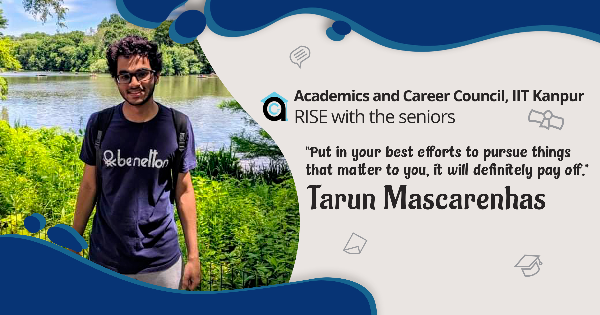
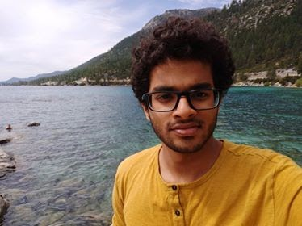
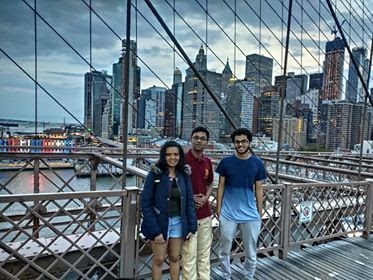
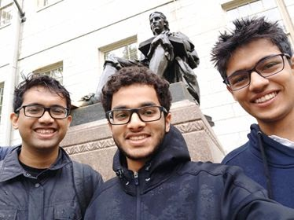
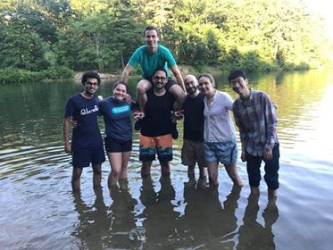

Science and Serendipity | Tarun Mascarenhas
June 3, 2020

I received two valuable pieces of advice in my first year which I feel are relevant to the
people about to embark on a research track in college. A professor said, “Don’t worry about
jobs – you are IITians, if anyone is desirable in the job market, it is you! So, don’t worry
about the prevalent opinion that trying out research will make you less hireable”.
The
second was imparted by a friend, “If you have an interest, explore it in any way you can. It
will pay off!” The second one, especially is something I have tried to imbibe and achieve in
my life at IITK. Put in your best efforts to pursue things that matter to you, it will
definitely pay off.

However, before landing the internship, I underwent the ardent task of emailing professors
directly and applying for internships programs (MITACS, Khorana, TIFR- VSRP, ISTernship,
etc). Searching for labs and programs can be done using combinations of keywords on Google
and Google Scholar. It is useful and universally advised to get your resume / SOPs / emails
proofread by seniors (preferably from your own field, their advice will be valuable), but
don’t blindly work around all advice, what works for one need not work for you. Your email
should be roughly composed of a self-introduction, a paragraph about what interests you in
their work and your relevant experience/skills (in brief) and conclude with how this
internship will help you (with regards to future plans). Apparently Indian students tend to
be overly formal; aim to be professional not over-respectful.
The usual replies consisting majorly of lack of funding or outright rejections are a part of
the process, but it's worse when professors do not reply (I recommend sending upto 3
reminders a week apart). I am glad I applied for so many programmes, even though I didn't
get accepted. The very application process helped me refine my understanding of my interests
and goals, edify my thought process and direction, all possible while rewriting the SOPs so
many times, searching for labs that interest me, reading papers, etc.

It is natural to not
have a well-defined idea of your interests. A method I found useful was to cross out stuff I
definitely disliked and list a few things that sounded interesting. Then, I went down that
list and searched for a few relevant papers (from Nature, Science, PNAS, etc) and tried
reading them (try understanding the abstract, go into detail only if you like the idea).
Always keep in mind that you aren't locked into a field after a project or even after a
degree, you can always hop around if you need to.
How I landed my internship was a bit atypical. In January 2019, I skipped classes and
attended a 2-week workshop on Synthetic Biology at Bangalore (synbio is a field that I was
interested in for a long time, but never before got a chance to explore). One of the
speakers was Johan Paulsson from Harvard Medical School, his talks on theoretical biology
were amazing. I had a lot of questions and he harboured the exceptional ability to explain
even the most complicated ideas, very thoroughly. We ended up speaking for a few hours after
that. He told me he was looking for interns for that year and encouraged me to email him. He
later remarked that our chat was as good as an interview and ultimately, he offered me an
internship for the summer!
After landing the internship watch out for the visa hassle. Always be in touch with whoever
is handling your case at the university. I would like to furnish a tip here: any documents
that the DOAA office refuses to provide, approach the Office of International Relations or
your department, they are usually more understanding. Then is also the time to begin
searching for accommodation. There are Facebook groups where students who live in the area
sublet their houses. They usually are away for the summer too and hence, need a summer
sublet. Try to get a place that is close by or well-connected by public transport.

The first thing that struck me about Boston was the lack of dust and the grand architecture.
I was living with a few other Indian students, and they quickly showed me the ropes with
regards to essentials like a sim card, groceries, the bank and the public transport. The
weather was a treat, a mild 15 °C. The first week at HMS was a lot of orientation and
paperwork. But after I got into the groove of things, work progressed well. I was assigned a
project to test a gene circuit that specifically degrades and represses a target plasmid
(mobile pieces of DNA). However, I had the opportunity to work on anything else I found
interesting: so, I dabbled in phage biology, stochastic biological theory and genetic
circuits for timing/counting.
The department’s atmosphere was amazing, I thoroughly enjoyed the weekly talks that were
conducted, they helped me gain insight into novel fascinating things being undertaken in the
field. The culture was completely merit based, everybody was treated as an equal and really
listened to anything you had to say, even the professors! Participating in discussions there
exposed me to the quantitative approach to biology. Experiencing this branch of science
strongly influenced my decisions about grad school.
I decided not to save any of my stipend and spent it all on travelling, good food (I didn’t
learn to cook, which in hindsight was kinda dumb) and electronics. Spending money you earned
yourself is truly liberating and unless you need it back home, I’d recommend not saving up.
The freedom during those 3 months was a good experience, you get to do whatever you like,
which is great; but you also have to fix your meals, do laundry and all the other not so fun
stuff, all in all a true experience.
Weekends were chill, we interns used to sometimes go to the lab anyway to get some prep work
done, but I did get my fair share of leisure time. I got to see a Snarky Puppy live show,
for a mere $10! Some IITK friends also interning on the East Coast visited Boston and we
explored the city. I also visited New York twice, finally travelling the places that we
lived through in movies and books. The 4th of July weekend, I visited my uncle in
California, going to Silicon Valley, Stanford and San Francisco. I also went to Yale for a
short visit, New Haven is a pretty place. Our department also had a retreat in Maine, which
hosted a nice mix of scientific talks, relaxation time and group activities.

The most important takeaway from the internship was the experience of working full time on
my own project and the ideal atmosphere at the Systems Biology department. Although I had
admitted to IITK sure of my decision to pursue a career in academia, none of my projects
before that one ever worked out well (LONG stories, all of them). That summer proved to be
the only significant research experience I had until that point.
I had to plan my own experiments, work my mistakes, set my own goals and interpret my data.
I had the opportunity to learn fluorescent microscopy, high-throughput time-lapse
experiments and advanced synthetic biology techniques. I also got a good feel of life in
academia. Apart from work it's also important to enjoy the opportunity to earn your own
money, travel, meet people from all over the world and learn to take care of yourself in the
big bad world!
Overall, the experience I had over the summer at Harvard was extremely positive. I made
friends, saw new places, learnt lots of science and levelled up as a researcher! The people
in the department and lab helped me realize the kind of experience I wanted to have in my
academic future. Apart from the stipend, the recommendation letters and CV buffs, I think
one should remember the personal growth aspect of an internship experience, the beauty of
experience.
Explore new things, have fun and work hard!
-Tarun Mascarenhas
-edited by Saksham Pruthi